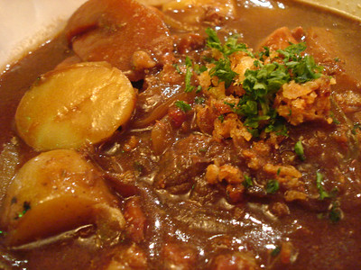

Hearty Viking Stew

Description
This recipe is sure to delight any warrior who rests their axe at your hearth. With root vegetables and deer meet, this dish is perfect after a long battle on a cold winter night. A worthy meal for a table in Valhalla!
Ingredients
- 1 lb of deer meat, cubed
- 2 onions, chopped
- 3 carrots, chopped
- 2 parsnips, chopped
- 2 turnips, split with and axe
- 4 cubs deer bone broth
- 2 tbsp butter
- 1 tsp salt
- 1 tsp crushed black pepper
- 1 tsp dried thyme
- 1 tsp dried sage
- 1 tsp dried rosemary
Steps
Melt the butter in your best campfire pot, then add onions until they are soft.
Brown the meat in the pot.
Stir in everything else except the broth.
Pour in the broth and boil, then simmer for 2 hours. The meat should be tender.
Serve with your best mead and a side of bread.